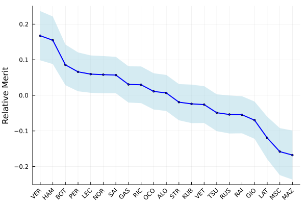

For Formula 1, the turbo-hybrid era dawned in 2014. Since then, Mercedes AMG, and notably Sir Lewis Hamilton, has dominated every season. However, come 2021, the fans are given the most exciting season in recent history. Red Bull Racing's Max Verstappen brings the fight to the seven-time world champion and claims his first drivers' championship in a season riddled with drama and controversy. Formula 1 recently drew a wave of new fans post the release of a highly dramatized documentary series on Netflix titled "Drive to Survive." Oddly enough, this season lived up to Netflix's dramatization of previous seasons. Verstappen denies Hamilton of his eighth world championship, which would have put him ahead of the highly decorated former Ferrari driver, Michael Schumacher. Additionally, the two title contenders enter the last race in a 22-race season equal in points. It all came down to this one race.
Abu Dhabi's Yas Marina circuit hosted the finale of the 2021 Formula 1 season. Verstappen and Hamilton are tied at 369.5 points. Historically, this circuit has not been kind to Red Bull's cars that are set up for higher downforce. Indicatively, Hamilton led most of the race after taking the lead in lap 1. On lap 53, Nicholas Latifi brought out the safety car. Hamilton stays out to preserve track position while Verstappen pits for a fresh set of the red-walled soft tires. When he emerged from the pit lane, he had retained second but had five lapped cars between him and Hamilton. On lap 57, Michael Masi, the race director, indicated that the lapped cars might unlap themselves by going past Hamilton. This put Verstappen right on the tail of Hamilton. Safety car comes in with one lap of racing remaining and Verstappen takes the lead. Holding off Hamilton for the short remaining race distance, he eventually classifies first and is crowned world champion.
Post this race; there were multiple protests raised by Mercedes AMG against the decisions taken by Michael Masi in the final laps. They contested the safety car procedures and instructions to unlap that were selectively sent to drivers. This is an exciting situation. Hamilton and Verstappen are incredibly talented drivers signed to capable motor racing teams. During the season, both of them displayed supreme skills in each race. Is it fair to decide the result of an entire season based on one race? Especially when the outcome is controversial. What if we could analyze the season from a lens that is not calibrated to points? I did just that and here is the result.
 Relative Merits of the 2021 Formula 1 Drivers.This model looks at the season as a Bayesian problem. Each race is considered to follow some distribution of utility values for each driver. This codifies a combination of factors per race, like the driver's skill, the pace of the car, track conditions, driver or team error, car setup, etc. Analyzing the classifications of each race up to the finale, we can infer these utilities using appropriate sampling methods (and a well-formed prior). Once we have arrived at an approximation of these utilities, we can simply consider it to be a Gaussian mixture. Credits to Myrl Marmarelis at ISI for developing this method. Additional details and experiments (with football!) are available on his blog.
Ultimately, you may agree or disagree with the result of the 2021 season. However, I hope you can see the merits of this model in predicting race results without additional covariate information about the races or the championship points system. If you look at the ranking produced by the model for the 2021 season, it is remarkably close to the final drivers' championship standing.
| Final | Model |
|---|---|
| VER | VER |
| HAM | HAM |
| BOT | BOT |
| PER | PER |
| SAI | LEC |
| NOR | NOR |
| LEC | SAI |
| RIC | GAS |
| GAS | RIC |
| ALO | OCO |
| OCO | ALO |
| VET | STR |
| STR | VET |
| TSU | TSU |
| RUS | RUS |
| RAI | RAI |
| LAT | GIO |
| GIO | LAT |
| MSC | MSC |
| MAZ | MAZ |
Keep in mind that Red Bull Racing did not have a solid championship-contending car from the results of the first few races. Additional experiments have displayed the model's robustness when the number of observable races is varied. This means we can predict the outcome of a season reasonably early on! The Formula 1 point system has been evolving ever since its inception. I assume it is not arbitrary, but one cannot help and wonder why it is the way it is. Why do the first three positions get 25, 18, and 15 points? Why is this not uniformly distributed? Why does the driver with the fastest lap get one additional point instead of seven? Why are points awarded only during the race on a Sunday and not during qualifying on a Saturday? Maybe models agnostic to these conditions are better at discriminating driver skills. Since the results from the model are reasonably close to the results determined using points, we can restore our faith in the system. To some extent, anyway.
There is a multitude of fields that could benefit from a similar treatment. Alaska and Maine allow Ranked Choice Voting for statewide and federal elections. Surveys that require annotators to rank options for a question can be denoised. Nevertheless, for now, on the eve of the 2023 Formula 1 championship, let us stick to motorsport. In addition to this, I will be developing a method to calculate driver-driver matchup scores similar to Elo in Chess. This can be used to determine the odds. As the 2023 season progresses, I will be updating this blog.